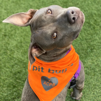
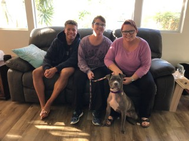
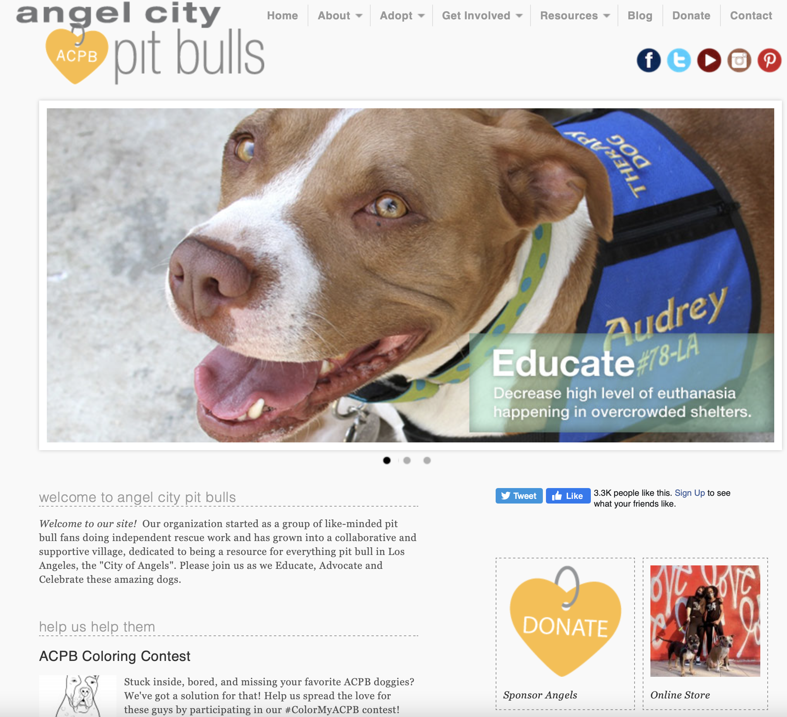
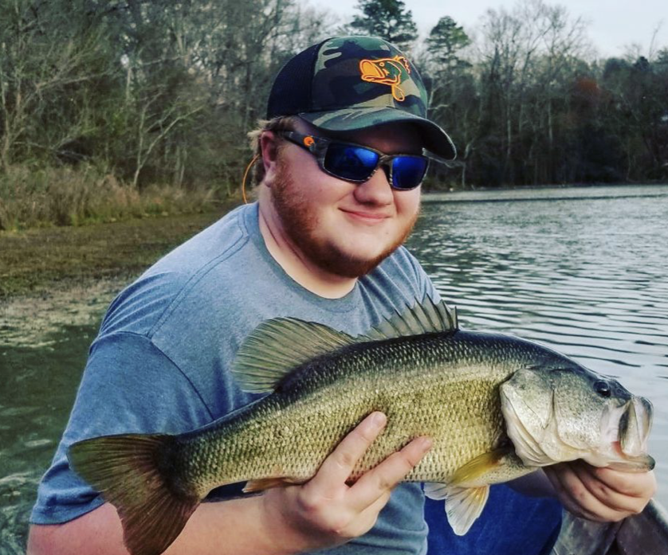

Audience and Goals
Overarching Goals
Client:

- Raise awareness about the true nature of pit bulls and provide resources for adoption, rehoming, and other information
- Reach people in the Los Angeles area and provide the opportunity for adoption, donation, fostering or volunteer work
- Showcase success stories to those who are contemplating adoption furthering the possibility of commitment
Audience:

- Receive information about ACPB and who they are and what they provide, being resources answering common questions
- Provide homes for pit bulls by individuals who are educated and responsible and are aware of the process of rehoming
- Help in any way possibile, be that to donate monetarily if able, volunteer if willing and local, or raise awareness
Website:

- Make information and resources easy to find and learn through
- Raise money and awareness through donations
- Provide an easy way of communication between the organization and audience
.
Specific Goals
| User | Goal | Action |
|---|---|---|
| Those looking to adopt | Provide a home to a dog who has been sheltered | Seek out dogs who have been in shelters/kennels for a period of time and give them a home. |
| Shelter Volunteers | Take care of dogs that have yet to be adopted and prepare them for adoption | Work toward taking care of sheltered dogs, looking after them until they are adopted. Making sure they are ready for a transition to their new home. |
| Dog Shelters | Provide information on caring for dogs and availability for adoption | Provide a space for street dogs or abandoned dogs with proper care and space for possible adoption opportunity. |
| NKLA: No-Kill Los Angeles | Seek out abandoned street dogs and make sure that they do not get put down | Work with local shelters to be able to take in new dogs, providing finances to keep as many dogs alive. |
| Dog Foster families | Take in dogs in need until they can have a forever home. | Make their homes available for dogs to be able to stay in order to make an easier transition to a permanent home. |
Interviews:
Josh Hightower

- Josh is the head of the Animal Control Department for Simpsonville Police Department
- He has been on the force for three years and is in charge of the kennel for Simpsonville PD
- Josh is very passionate about dogs, having two of his own. Two pit lab mixes that he rescued and adopted from the kennel
- Josh is also in charge of development for the kennel, having to do research on the betterment of the facility
Questions
How long have you been working with animals and in the shelter field?
- I’ve been working in the animal control and shelter department for about 3 years now. The last 16 months I have been head of it and working more in the shelter than on the streets.
How many dogs on average do you have in your kennel?
- The most we hold is 6, if there is overflow we try to work with other city departments that have space or local animal shelters if the dog is suitable for that situation. On average I’d say we always have at least 1 or 2 in the kennel.
How do you go about advertising that dogs in your kennel are up for adoption?
- If the dog is up for adoption and not just being held for reasons, then we would try to advertise through local animal hospitals and shelters. We would keep and care for the animal so that they do not have to worry about another dog to take care of while in the process.
How would you describe the process people take for adopting a dog from your shelter?
- We have a number of individuals and families who are on a list who have either adopted from the kennel before or known to the department and we let them know if there are dogs available. We also tell local hospitals and shelters when we have a dog that has been with us for a period of time.
- Or we could have officers in the department that may want to either foster or adopt the dogs in the kennel.
What other sources do you and your team look at in bettering your department?
- We always try our best to keep up to date on how different departments and shelters go about tending to their dogs and putting them through the foster or adoption process. We look at local shelter’s websites to figure out the best way to both advertise and move possible adoptions through the kennel.
Is there anything that you specifically look for in a shelter’s website when you were adopting?
- When I was adopting, I would look at how the website for the shelter would display the information on the dog available and how to care for them. If they had information on their organization or just any other important information I would look there. When the website to the shelter had more information on themselves and what they do I tended to look through their website more than others that did not have as much.
How does the presentation of a website affect how you would go about the adoption process?
- To me, it is more about their organization as a whole rather than the website itself, but design is important for navigation and clarity. It is not a deal breaker if the website is not very well designed, but does help in seeking information. I would say that it is very important for a shelter to have a clean design that can be navigated simply.
At this point, Josh was shown the Angel City Pit Bulls Website for critique and advise:
If you were to look at angel City Pit Bull’s website for adoption, what would you like to see added or reworked to make it more visually appealing?
- I love pits, both of my dogs are pit mixes and I am happy to see a shelter that works with the breed specifically since they are more neglected among adopting families. I like how they have their website laid out, information that all adopting families need to know, a place for learning about them and available dogs. I’d just like to see it cleaned up and updated more regularly.
Julianna Crawford
- Julianna is a animal rights advocate seeking better treatment of factory farmed animals for consumption
- She has just recently adopted her third dog, she is someone who is always willing to take in dogs in need when she is able to
- Having browsed for day trying to find a new addition to her family she had to search many websites to come to the outcome she did
Questions
When you were adopting your dog, where did you go to find them?
- I went to the Greenville Humane Society’s website to find out about what dogs they have available for either fostering or adoption. I also went to a few local kennels and shelters in person but ended up staying with the Human Society. I also browsed the Greenville County animal Care site.
How did the website design affect how you went about the adoption process?
- Surprisingly, It mattered a lot more to me than I thought it would. I think it's subliminal too, since it wasn’t until after checking out all of my options that I realized that it was easier to scan through one site over the others.
- Between the Humane Society and Greenville County Animal Care, I felt that the Humane society had a much cleaner layout and a lot more information that was very useful in my search.
If there could only be a few elements to an adoption website’s design, what do you think would absolutely need to be there?
- Information about the organization, including mission statement and maybe the history of their organization. A page for the different dogs available for either adoption or fostering, information about care for the dogs and links to any other information that can be useful.
- If I wanted to keep up to date with the organization, a place to submit my information for updates would be useful.
At this point, Julliana was shown the Angel City Pit Bulls Website for critique and advise:
If you were to look at angel City Pit Bull’s website for adoption, what would you like to see added or reworked to make it more visually appealing?
- I think that they have everything that is necessary for their website, overall I think that the layout just needs to be a bit more modern, cohesive and touched up.
- Nothing drastic needs to be added or taken away, just reworking the design to make it more pleasant to view.
Insights Gained
- Overall, I learned about how those individuals or families looking to adopt see a website for the opportunity and what they want to get out of the experience of visiting.
- From Josh I learned how local police kennels may see ACPB as a source of finding homes from strays they've had to pick up.
- I will take this information and construct a way for local authorities, being police, fire or other local services to be able to reach out and inform ACPB of recent additions to their kennels.
Website Design
- I learned from both interviewees that the current design is not necessarily bad, it just needs a bit of modernization and touching up.
- I also learned of the absolutely needed elements for the website and where to build off of the ones that I have currently.